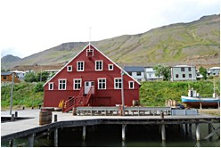
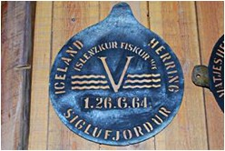

<< retur
Siglufjördur
Et
sildemuseum!
Den skal du sgu længere ud på landet med,
var min umiddelbare reaktion, da en ven fortalte mig, noget sådant
findes i Islands nordligst beliggende by Siglufjördur, men
det er skam rigtigt nok. Siden 1996 har museet fortalt historien
om dengang, byen var øens sildemekka, dengang den var en
af Islands største byer, dengang den regnedes for en økonomisk
magtfaktor. Gode, kølige fiskevande, en fremragende naturhavn
samt umådelige mængder af sildestimer sikrede den
denne fine status; i dag bor der ikke mange flere end 1600 sjæle
her, fiskeflåden og de tusinder af sildetønder på
havneområdet er for længst borte. Engang i slutningen
af tresserne viste silden sig ikke mere i mængder, der var
store nok til at drive rentabel fiskeindustri i Siglufjördur,
så for saltningsstationerne var der kun et at gøre:
at dreje nøglen om. At det kunne komme så vidt, skyldtes
en blanding af pengebegær, stadig mere avancerede, effektive
fangstmetoder samt uvidenhed om og manglende respekt for naturens
hårfine balancer.
Det var aldrig tidligere faldet mig ind, at denne fisk skulle
vække min ægte interesse. Nej, interessen var faktisk,
undskyld! : Død
som en sild,
men som citatet her fra skuespillet ”Tottenham Court”
af Thomas Nabbes viser, optog den andre, og når man nu tænker
over det, viser det sig, at også flere af disse har syntes,
at silden egner sig fint som metafor. Som
sild i en tønde,
siger Cervantes et sted i ”Don Quijote”, eller det folkelige
udsagn fra Middelalderen: Ikke
en sur sild værd;
find selv flere. Humoristen Storm P. har en mere elementær
oplevelse af vores fisk, når han udtaler, at - Nogle
tørster efter rigdom og ære - jeg tørster
altid efter spegesild.
Det er ikke voldsomt flatterende ord, silden får med på
vejen, hvilket sikkert skyldes dens engang rigelige og almindelige
forekomst, som gjorde den til en billig spise, men i virkeligheden
burde man på det nærmeste have højagtet den,
fordi den for en del nationer, deriblandt Danmark, var et vigtigt
fundament for både økonomi og sundhed, rig, som den
er, på flerumættede fedtsyrer, jod, selen, A-, B-
og D-vitaminer. Fiskeriet efter sild i Øresund havde f.eks.
kronede dage fra 1100 tallet, hvor man fandt ud af at lagre fisken
i salt, der blev hentet fra saltminer på Lüneburger
Heide. Da fiskeriet gik bedst, eksporteredes der op mod 300.000
tønder saltkonserverede sild om året, og det tilførte
den danske statskasse over 30 % af den samlede indkomst. Ikke
underligt, at sild kaldes ”havets guld”. ”Havets
sølv” er en anden betegnelse, som tilskrives fiskens
glinsende skind, og faktisk er silden et smukt væsen. Hos
Clupea
Harengus
changerer ryggen i blå og grønne farvetoner, mens
den bevæger sig lynhurtigt i jagten på vandlopper
og lyskrebs eller andre plankton-dyr, men næsten hjertegribende
symbolsk forsvinder farvespillet, når den fanges. At den
har mættet så mange munde
I tidens løb, skyldes dens særdeles ”gavmilde” formeringsevne: mere end 20.000 æg gyder den direkte ud i havet; forestil dig, hvor mange en hel stime leverer! Jo, der burde være nok til Per og Poul ? hvad der altså pludselig ikke var ved Siglufjördur. Og det er mit stikord, ind på museet, inden det bliver for sil..., nej, den er vist for vand... . Nå, ikke flere platheder, jeg går ind i det ene af museets tre huse, den røde hovedbygning. Roaldsbrakki, som bygningen hedder, opkaldt efter sine oprindelige norske ejere, brødrene Roald, rummer hele fire udstillingsetager. Nederst træder man lige ind i de hårdt prøvede saltningsarbejderes kreds, indføres i deres teknikker og redskaber. I de gode tider arbejdede der over 50 såkaldte ”sildepiger” på saltningsstationen, og de måtte slide fra morgen til aften udenfor i alt slags vejr, indtil fiskerne havde tømt deres både for sild. Da der blev arbejdet på akkord, gik pigerne virkelig til makronerne, så en god dagløn kunne komme i hus. Efter fyraften kunne de så trække sig tilbage til køjerummene på Roaldsbakkis tredje sal, hvor jeg nu går op. Indboet her bærer tydeligt præg af pigernes bevidsthed om, at mændene omkring dem beskæftigede sig med gode sild i flere betydninger. Her er eau de cologne, curlers, silkestrømper, læbestifter, smarte kjoler og andet, som lørdag aften kunne hjælpe med til at lokke en islandsk Cary Grant i fælden efter en barsk men ofte lønsom uge ”i fiskene”. Museets egen lille folder om Roaldsbakki vil gerne forebygge eventuelle frivole fantasier og beretter, at nok gik det livligt til blandt de unge mennesker, men alt foregik på en sømmelig måde, og der var ”skikkelig” orden på alting; det kunne være interessant at høre, hvilken fantasi, der har fået vores moralske forfatter til at anføre dette.
Jeg springer loftsetagen med dens forskellige redskaber over og møder nede på anden sal en sand anakronisme af et kontor, hvor der under det norske kongepars kontrafejer er tænkt driftige tanker om produktudvikling, og således blev både fiskeolie- og mel nye salgstrumfer til de markeder, man udpegede på den bedagede globus ved siden af Islandskortet. Her er givtige kontrakter underskrevet, her har virksomhedens arbejdere fået udbetalt deres løn. Det tungt møblerede kontor har være selve sildefabrikkens landbaserede kommandobro.
På første sal understreger gamle film sammen med de udstillede genstande Norges store betydning for sildeeventyret i Siglufjördur. Pigen ved billetskranken byder os på en røget smagsprøve, der smager af mere, hvilket får mig til at spørge, om man ud over sild i tønder også eksporterede fiskekonserves. Et dumt spørgsmål erfarer jeg, da hun peger på en montre fyldt med forarbejdede sild lige bag mig. Den nostalgi, synet af de mange produkter skaber, er fuld af billeder: mennesker ved et veldækket, spraglet frokostbord, røde næser, duggede snapseglas og glade øjne. Der var noget særligt på færde, når ens forældre serverede sild fra Island, et måske lidt svævende løfte om friskhed forbundet med den salte sandhed om kolde haves sunde næringsrigdom, et løfte om velvære.
Et lille udsnit af datidens righoldige eksportvarer. Danmark var en af de største aftagere. | Inden afskeden med Roaldsbrakki sætter jeg mig og ser en film med glimt fra byens storhedstid. Havneområdet er overalt i hektisk aktivitet. Mellem tusindvis af eksportklare tønder færdes fiskere, der er kommet ind med dagens fangst, travle pakke- og saltningspiger, losse- og lastningsarbejdere, mænd med kasket på hovedet, en blyant bag øret og talent for overblik. Man kan næsten lugte olien, saltet, tjæren, næsten mærke en bidende vind om næsen og en lammende kulde i fingrene. Filmen samt rummets sort/hvide fotostater er fine dokumenter om en svunden tids fællesskab, hvor mange fik udbytte af deres respektive evner. Størst udbytte fik selvfølgelig kapitalens mænd, hvilket mere end antydes i nogle malerier, jeg finder udstillet i bygningen Grána, den gamle fiskeolie- og fiskemelsfabrik, som kun ligger få skridt fra Roaldsbrakki. Kunstneren hedder Sigurjón Jóhannsson, og det er ret tydeligt på hvis side, han står. Den fæle kapitalist gengives klart karikeret med sin velnærede vom, vitale attitude og den knyttede næve, mens han vender ryggen til det arbejdende folk. Skal hans habit forestille at være sildebensmønstret? Ja, så er symbolikken næsten for fed, når man samtidig kan konstatere, at tøjet er blåt som fiskene på ”samlebåndet”. Men selvom han har gjort sig til et med sit lukrative produkt, er hans tydelige tilfredshed måske et tegn på hybris i forhold til magten over naturens umælende elegantier. Det synes kunstneren i hvert fald at mene: En dag holdt silden op med at komme, korthuset ramlede, eventyret var forbi, og det var vel nok sørgeligt for både høj og lav, som eventyrdigtere ville have sagt.
Sigurjón Jóhannssons stiliserede fremstilling af katastrofen, da silden udeblev. Siglufjördur ramler sammen og forvandles fra forjættet land til kaotisk provinsialitet.
I alt 24 malerier gav deres ekspressive bud på sildeæraen; et interessant og meget subjektivt supplement til museets dokumentariske dele. | Kunstudstillingen er imidlertid blot en momentan ekstra bonus til museets besøgende, hovedsagen er rekonstruktionen af Siglufjördurs længst nedrevne fiskeforarbejdningsfabrik, Grána, som havde sin storhedstid i begyndelsen af 1900 tallet. Bygningens vældige udstillingshal viser, hvordan silden blev forvandlet til olie og mel. Processerne lige fra losning af råproduktet over saltning, kogning, presning, tørring og pakning kan følges under den spændende rundgang blandt de sindrige maskiner i lokalet. Fiskemelet eksporterede Grána til Europa og Nordamerika, hvor det fortrinsvis blev anvendt som foder til svin og fjerkræ. Melet har sikkert været af høj kvalitet, da det stammede fra fisk fanget i kolde farvande, hvilket efter sigende skulle være en garanti for sunde individer med en ideel sammensætning af amino- og fedtsyrer; jeg ser for mit indre blik methionin-struttende kyllinger, som nok kunne få mundvandet til at løbe (methionin er navnet på en svovlholdig aminosyre). Fiskeolie fra fede fiske er som bekendt rig på flerumættede fedtsyrer og således sund for både dyr og mennesker, men den islandske eksportolie gik blandt andet til fremstillingen af sæbe, fernis, maling og kosmetik, ja, ok, også til dyrefoder, men trods alt til mere eller mindre ”profane” formål vil vor tids sundhedsbevidste mennesker hævde. Flere præparater, der indeholder fiskeolie, omega 3 fedtsyrer, er i dag af Lægemiddelstyrelsen i Danmark godkendte som naturlægemidler, og endnu flere kan købes som kosttilskud. Mon ikke Grána havde været en vigtig spiller på det marked, hvis ikke silden havde fundet andre farvande... .
Nu er de fleste skibe lagt op, nogle er oven i købet kommet
på museum og kan beses i Bådehuset, som er Sildemuseets
tredje bygning. Personligt har jeg ikke det mindste forstand på
både men kan da godt se hvor imponerende, de gamle fiskerbåde
er med deres massive egetræsskelettter, og kan også
godt fornemme oplevelsen af frådende hav omkring mig, mens
jeg betræder dørkens knirkende planker. Hiv
ohøj og en halv flaske rom!
Forsigtigt ser jeg mig over skulderen, der er vist ingen, der
har hørt mit pseudomaritime udbrud og godt det samme, selvom
det selvfølgelig ville være flatterende at blive
forvekslet med Long John Silver. Så bliver jeg opmærksom
på, at den største af bådene bærer navnet
”Tyr”, et navn, som også aktiverer erindringer
fra barndommens læsning. Det var jo ham, der lagde Fenrisulven
i lænker og siden blev kendt som guden, som ofrer sig for
andre, fordi han måtte miste sin ene arm for at overvinde
uhyret. Bådens navngiver har dog nok snarere tænkt
på den Tyr, der optræder i Hymerskvadet, hvor han
konstruerer et bryggekar af en sådan størrelse, at
der på én gang kan brygges tilstrækkeligt øl
til alle guderne; eller måske havde han den strategiske
krigsgud Tyr i tankerne, som lod sin magtfuldhed kombinere med
en Prometheus’ forudseenhed. Under alle omstændigheder
må skuden have landet uendelige mængder af sild, snildt
overlevende det våde elements udfordringer.
Det er på tide at forlade museet, som sandelig har bragt
mig på sporet af en tabt tids hverdag i en lille by højt
mod nord. Nu er befolkningen som nævnt faldet i antal, da
rigtig mange unge flytter til Reykjavik, og fiskeriaktiviteterne
er forholdsvis beskedne, men de er ikke helt ophørte. Allerede
i begyndelsen af 1970erne grundlagdes med støtte
fra den islandske stat Thormódur Rammi Fiskeri Selskab,
som havde succes med et omfattende torskefiskeri, senere - i 1990erne
- var det rejernes tur til at bringe Siglufjördurs økonomi
på fode igen. I dag er fisken stadig en kilde til indtægter
for byen, men nu tillige indirekte via Sildeæramuseets virksomhed,
der i 2006 tiltrak over 8000 besøgende fra mange forskellige
lande, og der er næppe tvivl om, vil blive et fundament
for stedets fremtid. Siglufjördur er ikke sådan at
knægte, selvbevidstheden fejler ikke noget, hvilket jeg
erfarer hos nogle lokale, der fortæller mig, at når
København overhovedet havde lys i gaderne tilbage i tiden,
skyldtes det den hajleverolie, man importerede herfra og brugte
til lygterne. De kan også fortælle mig, at Tormódur
Rammi, som lagde navn til ovennævnte fiskerivirksomhed,
egentlig hed Haraldsson til efternavn og kom fra Norge i 900 tallet,
men fik prædikatet Rammi (den stærke), fordi han vandt
kampen om retten til landet omkring Siglufjördur: Vi
er efterkommere af vældige vikinger,
synes deres pointe at være. Jeg nikker underdanigt og tager
afsked med et gammelt tysk bogtrykkerudtryk uden at spekulere
dybere over dets i denne sammenhæng lidt spegede logik:
Godt,
at alt ikke gik i fisk for jer.

Copyright Preben Rasmussen (tekst)
Copyright Elisabeth Frank-Rasmussen (fotos)
<< retur
|
| |